Cómo registrar los rollos de DTF, cómo se descuenta solo el material de cada OP y cómo leer la rentabilidad de las órdenes y de cada rollo.
Operarios de DTF, asesores comerciales y gerencia.
Las OP de DTF UV y DTF Textil descuentan solas los metros del rollo.
Registrar en el CRM los rollos que hay hoy en bodega.
El inventario de DTF se lleva por rollo. Cada rollo se registra con su largo y su costo, y el CRM sabe en todo momento cuántos metros le quedan.
Cuando se vende DTF UV o DTF Textil en una OP, el CRM descuenta solo los metros vendidos del rollo que está montado en la máquina. No hace falta crear una OT. Así cada OP sabe cuánto le costó el material y la rentabilidad deja de ser un estimado.
La función está en el menú Logística → Rollos y lotes. Lo que cada persona puede hacer depende de los permisos de su rol, que gerencia asigna en Roles (grupo «Rollos y lotes»):
| Permiso | Qué permite | Sugerido para |
|---|---|---|
| Ver Rollos y Lotes | Ver los rollos, su saldo, costos e histórico, y el material de cada OP. | Operarios, gerencia |
| Registrar Rollos y Lotes | Registrar los rollos que llegan. | Operarios, gerencia |
| Gestionar Rollos y Lotes | Montar, cerrar y anular rollos; asignar ventas sin rollo. Recibe el aviso de rollo bajo. | Gerencia |
| Corregir Consumo de Material en OP | Corregir a mano los metros de un ítem. | Gerencia |
Se hace cada vez que llega un rollo nuevo, una sola vez por rollo.
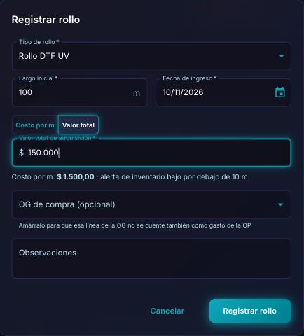
Arriba de la lista hay una tarjeta por tipo de rollo con los metros disponibles y lo que vale ese inventario. Al hacer clic en una tarjeta, la lista se filtra por ese tipo.
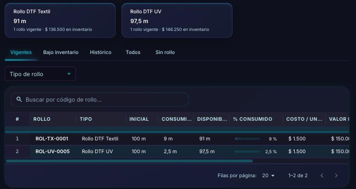
| Vigentes | Rollos con saldo: los que se pueden usar. |
| Bajo inventario | Rollos a los que les queda menos del 10 % de su largo. |
| Histórico | Rollos agotados, cerrados o anulados. Nunca se borran. |
| Todos | Todo lo anterior junto. |
| Sin rollo | Ventas hechas sin saldo en los rollos registrados (sección 8). |
| Disponible | Tiene saldo. |
| En uso | Es el rollo montado en la máquina: de él sale el material de las OP. |
| Bajo inventario | Le queda menos del 10 % (un rollo de 100 m avisa por debajo de 10 m). Quien tenga permiso de gestión recibe una notificación. |
| Agotado | Se usó completo. |
| Cerrado | Se cerró a mano; lo que le quedaba salió como merma (sección 9). |
| Anulado | Se registró por error y se anuló. |
Haz clic en un rollo de la lista para ver su detalle: largo inicial, cuánto se ha consumido en OP, cuánto le queda y lo que costó.
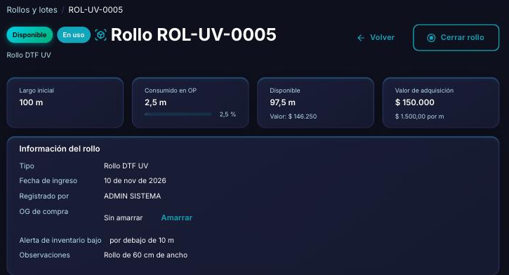
Solo hay un rollo en uso por tipo: el que está puesto en la máquina. Las OP descuentan de ese rollo primero.
Más abajo en el detalle están la rentabilidad del rollo (sección 10), las órdenes que consumieron de él y todos sus movimientos: ingreso, consumos, devoluciones y cierre.
No hay que hacer nada distinto al vender. Cuando una OP tiene un ítem con el producto DTF UV o DTF TEXTIL, el CRM toma la cantidad del ítem como metros y los descuenta del rollo en uso. Da igual si la OP se creó desde el módulo DTF o directamente como OP, y no hace falta que tenga OT.
En el detalle de la OP aparece el panel Material consumido: cuántos metros usó cada ítem, de qué rollo salieron y cuánto costaron.
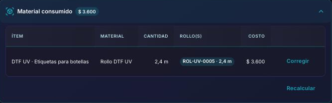
| Se crea la OP (aun en borrador) | Se descuentan los metros. El DTF se imprime enseguida, así que el material se cuenta desde ese momento. |
| Se edita la cantidad | Se descuenta o se devuelve solo la diferencia. |
| Se quita un ítem o se borra el borrador | Los metros vuelven al rollo. |
| Se anula la OP | Los metros vuelven al rollo. |
| Se devuelve el dinero al cliente | El material no vuelve: el trabajo ya se imprimió. |
El CRM toma la cantidad del ítem como metros. Eso está bien cuando el DTF se vende por metro, pero no cuando se vende por unidad, como stickers o etiquetas. En este ejemplo, 200 stickers se tomaron como 200 metros:
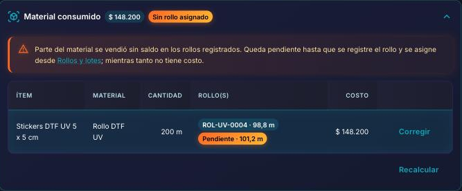
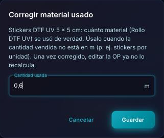
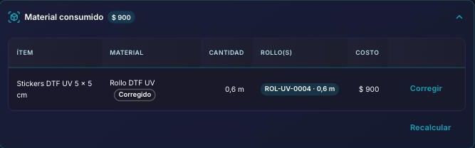
Si se vende DTF y los rollos registrados no tienen saldo suficiente, la venta no se frena. El faltante queda sin rollo: aparece en naranja en el panel de la OP y todavía no tiene costo.
Pasa casi siempre porque llegó un rollo que nadie registró. En la página de Rollos y lotes aparece un aviso y la pestaña Sin rollo muestra cada venta pendiente:
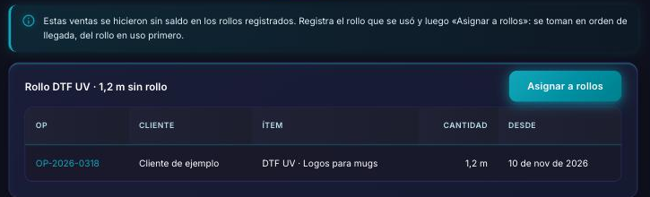
Los rollos no rinden exactamente lo que dice la etiqueta: hay pruebas de color, reimpresiones y un final que no alcanza para imprimir. Ese material perdido es la merma.
Cuando un rollo ya no sirva, ciérralo. Lo que el CRM todavía le ve sale del inventario como merma y no se carga a ninguna OP; se ve en la rentabilidad del rollo.
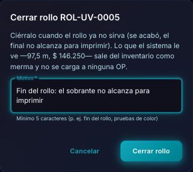
El Resumen financiero de la OP ahora mide la utilidad sobre la venta sin IVA: el IVA no es ingreso de la empresa. Los gastos suman las órdenes de gasto de la OP y el material consumido.
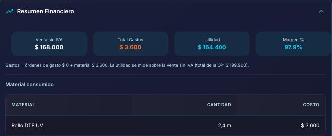
En el detalle del rollo, la tarjeta Rentabilidad del rollo muestra cuánto se vendió con él, cuánto costó ese material, la ganancia bruta y lo que queda después de la merma. La venta de cada ítem se reparte por los metros que salieron de ese rollo: un ítem que usó dos rollos no se cuenta dos veces.
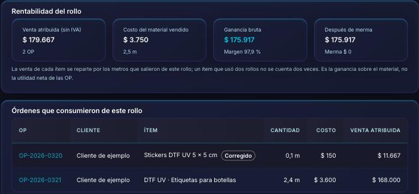
Es la ganancia sobre el material, no la utilidad neta de las OP: los demás gastos siguen en la rentabilidad de cada OP.
Por ahora, DTF UV y DTF TEXTIL, vendidos por metro. Otros productos del catálogo DTF (por ejemplo, prendas o marcas) no descuentan solos.
No. El material se descuenta desde la OP, tenga o no OT.
No había saldo en los rollos registrados. Registra el rollo que se usó y asigna la venta desde la pestaña Sin rollo (sección 8).
Esa diferencia es merma (pruebas, reimpresiones, el final del rollo). Cierra el rollo (sección 9) y lo que le quedaba sale como merma.
Casi siempre es una OP que tomó más metros de los reales, por ejemplo stickers vendidos por unidad. Busca la OP en Órdenes que consumieron de este rollo y corrige sus metros (sección 7). El rollo recupera la diferencia.
Sí. Haz clic en Montar en el rollo nuevo. Las ventas siguientes salen de él; lo que ya se descontó se queda en el rollo anterior.
No. Los rollos y sus movimientos nunca se borran, para conservar la historia. Si se registró por error y no se ha usado, se anula.
Las personas con el permiso Gestionar Rollos y Lotes, cuando a un rollo le queda menos del 10 % de su largo.